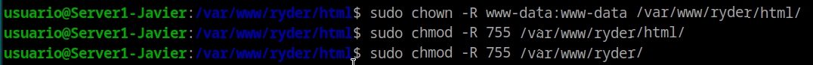

Práctica 2.1
Instalación y configuración de un servidor web Nginx
Javier Rider Jimenez
1. Instalación del servidor web Nginx
Antes de hacer nada, debemos actualizar la máquina con apt update. Una vez hecho esto, podemos instalar nginx con apt install nginx.
Verificamos que se ha instalado correctamente con systemctl status nginx.

2. Creación de la carpeta del sitio web
Todos los archivos de Nginx se organizan en carpetas, usualmente en /var/www. Por lo tanto, creamos la carpeta para nuestro sitio web (en mi caso, la carpeta Ryder), y dentro de esta, la carpeta html. Comando: sudo mkdir -p /var/www/nombre_web/html.
Una vez creada, clonamos el repositorio https://github.com/cloudacademy/static-website-example. Aclarar que debemos tener Git instalado en la máquina para esto.

Además, asignamos como propietario a www-data de las carpetas que acabamos de crear, con el comando sudo chown -R www-data:www-data /var/www/ryder/html.
Y, también, le damos permisos para evitar errores con: sudo chmod -R 755 /var/www/nombre_web.

Para comprobar que Nginx funciona, abrimos el navegador de la máquina virtual y vamos a http://172.23.192.254 o a la IP asignada en ese momento (en mi caso, la 172.23.192.254). Si todo ha ido bien, debería mostrarse esto:

3. Configuración del servidor web Nginx
Para que Nginx muestre nuestra web, debemos crear un nuevo archivo dentro de la carpeta sites-available con el nombre de nuestra web, usando el siguiente comando: sudo nano /etc/nginx/sites-available/ryder.
El contenido debe ser el siguiente:
server {
listen 80;
listen [::]:80;
root /ruta/absoluta/archivo/index;
index index.html index.htm index.nginx-debian.html;
server_name ryder;
location / {
try_files $uri $uri/ =404;
}
}

Después, creamos un enlace simbólico entre este sitio y los sitios habilitados con el comando: sudo ln -s /etc/nginx/sites-available/ryder /etc/nginx/sites-enabled/.
Reiniciamos el servicio para aplicar los cambios con: sudo systemctl restart nginx.

4. Comprobaciones
No contamos con un servidor DNS que resuelva las solicitudes de nombres a IPs. Para esto, en la máquina física vamos a editar el archivo C:\Windows\System32\drivers\etc\hosts para añadir la línea:
172.23.192.254 ryder.

5. Comprobar registros del servidor
Comprobamos que las peticiones se están registrando en los archivos de logs, tanto correctas como incorrectas:
- /var/log/nginx/access.log para solicitudes correctas.
- /var/log/nginx/error.log para solicitudes incorrectas.

6. FTP
En este apartado, vamos a configurar el protocolo FTP para poder transferir archivos de la máquina física a la virtual. Dado que FTP es un protocolo obsoleto, usaremos SFTP.
Primero, debemos tener actualizada la máquina. Luego, instalamos vsftpd con: sudo apt-get install vsftpd, y creamos la carpeta FTP para el usuario que utilicemos. En mi caso, el usuario es "usuario": mkdir /home/usuario/ftp.

Creamos los certificados de seguridad necesarios y realizamos el proceso de credenciales (los apartados se pueden dejar vacíos).

A continuación, editamos el archivo de configuración de vsftpd: sudo nano /etc/vsftpd.conf, comentando las siguientes líneas:
rsa_cert_file=/etc/ssl/certs/ssl-cert-snakeoil.pem
rsa_private_key_file=/etc/ssl/private/ssl-cert-snakeoil.key
ssl_enable=NO
Y las sustituimos por estas:
rsa_cert_file=/etc/ssl/private/vsftpd.pem
rsa_private_key_file=/etc/ssl/private/vsftpd.pem
ssl_enable=YES
allow_anon_ssl=NO
force_local_data_ssl=YES
force_local_logins_ssl=YES
ssl_tlsv1=YES
ssl_sslv2=NO
ssl_sslv3=NO
require_ssl_reuse=NO
ssl_ciphers=HIGH
local_root=/home/usuario/ftp

Para aplicar los cambios, reiniciamos el servicio con: sudo systemctl restart --now vsftpd.
El servicio SFTP ya está funcionando, pero para usarlo necesitamos un cliente FTP como FileZilla. Descargamos este programa en nuestra máquina física. Para conectarnos, ponemos la IP del servidor (máquina virtual), en mi caso la 172.23.192.254, el usuario y la contraseña habilitados (en mi caso, "usuario"), y el puerto 22 (ya que el 21 da problemas).
Nos dará un aviso debido al certificado usado por el servidor SFTP, pero como nosotros mismos hemos creado el servicio, podemos confiar en él. Tras esto, podemos probar a transferir un archivo de la máquina física a la virtual.

7. HTTPS
Para añadir seguridad a las conexiones, pasando de usar HTTP a HTTPS, debemos hacer algunos cambios en cosas que ya hemos hecho antes. Lo primero es modificar el archivo en sites-enabled con: sudo nano /etc/nginx/sites-enabled/ryder y añadir lo siguiente. Lo más importante son los certificados SSL.
Pequeña aclaracion: debe ser $server_name. Es un pequeño error al tomar la captura que despues fue cambiado

Luego, generamos los certificados que usamos en sites-enabled/. Técnicamente, estos certificados no son válidos porque son autofirmados, pero para tener certificados válidos habría que pagar, y en este caso podemos confiar en nosotros mismos.

Asignamos permisos a los certificados generados.
En la máquina física debemos modificar el archivo hosts para resolver la petición DNS con nuestro nombre de dirección web y nuestra IP.
Ahora, desde la máquina física podemos ver la página http://ryder.com.

Para comprobar el funcionamiento de la versión HTTPS, movemos la web de ejemplo desde la carpeta ./ryder/html/static-website-example a la carpeta ./ryder/, y por último, borramos el directorio ./html/. Tener mucho cuidado en este paso, ya que podemos romper la máquina.

Hacemos un último test para comprobar que todo ha funcionado correctamente.

Si todo ha salido bien, en el navegador de nuestra máquina física debería aparecer un aviso en la página https://ryder.com, ya que los certificados que utilizamos son autofirmados. Una vez pasemos el aviso, deberíamos ver esta página web.